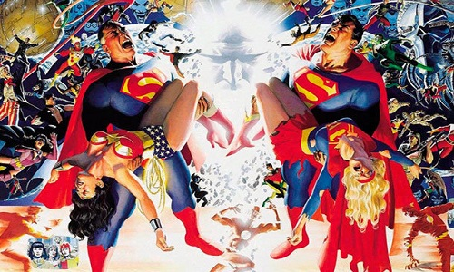
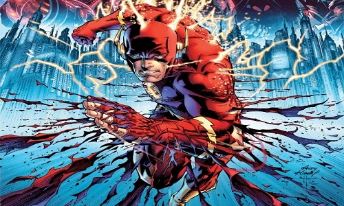
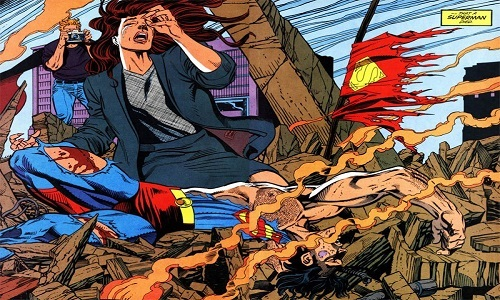

Crise nas Terras Infinitas.
Crise nas Infinitas Terras trouxe momentos icônicos,
principalmenteporque a morte de personagens não era tão comum.
Ver Barry Allen e Supergirl, doisheróis de primeira
grandeza, sacrificando-se para manter a Terra principal viva foi
chocante para a época — e, veja bem, Allen ficou afastado dos quadrinhos por 20 anos depois disso.
Embora muita coisa ainda estivesse “bagunçada” após a conclusão,
Crise nas Infinitas Terras serviu para organizar melhor o Universo DC e realmente revitalizou muitas propriedades. E dá para dizer que todos os eventos da editora, desde então, são uma “continuação” da Crise original.

Ponto de Ignição/Os Novos 52
Esse é um reboot polêmico e que trouxe um misto de amor e
ódio aos leitores.Bem, em 2011, com influência massiva do cinema
nos quadrinhos e a necessidade de atualizar os personagens para uma nova geração, a DC contou uma história em que o Flash volta no tempo para salvar sua mãe, mas acaba mudando completamente a continuidade do Universo DC.
Quando o mundo retorna ao normal, muitas coisas mudam.
Assim, com os Novos 52, alguns dos heróis se tornaram mais jovens, como Superman, e os casamentos, assim como os filhos acabaram.
A linha do tempo que vinha de antes da Segunda Guerra Mundial foi encurtada para apenas cinco anos antes, o que explicava a ausência de vários Flash ou uma Tropa de Lanternas Verdes.
É claro que isso causou problemas, com a ausência do legado explicada anteriormente; assim como inconsistências, a exemplo de o Batman, mesmo rejuvenescido, tendo em seu histórico vários Robin em sua trajetória contra o crime

Morte do Superman
Os anos 1990 foram conhecidos como os anos de decadência
dos super-heróis. Foi um período em que as editoras viviam lapsos criativos e apelavam para tramas chocantes e sexualização de personagens, especialmente as femininas, em páginas com muitos desenhos belos, mas textos bem abaixo de medíocres.
Eis que a DC Comics tomou uma decisão bastante questionável na
época, matar o seu maior ícone, em 1992. A história nem foi assim
grande coisa, assim como o vilão Doomsday, que era quase uma
mistura do Hulk com o Wolverine. Mas… o que aconteceu
com esse evento, ninguém no mundo poderia prever.
Era um período sem internet, e, mesmo sabendo que o Superman eventualmente voltaria, a sensação quando ele nos deixou foi
de profunda melancolia e tristeza.
Estávamos todos acostumados a ver o “S” e seu símbolo de esperança todos os meses nas bancas, mas, naquele momento, todo mundo experimentou como seria não vê-lo mais.
As ruas, o noticiário, as rodas de conversa, foram tomadas por uma sensação de saudade instantânea, com muita gente chorando. Como sabemos, o Superman voltou e, além de ter causado toda essa comoção, mudou para sempre o que é vida e morte dos quadrinhos: depois de Kal-El ter vencido a morte, ninguém nunca mais ficou enterrado para sempre nas revistas.